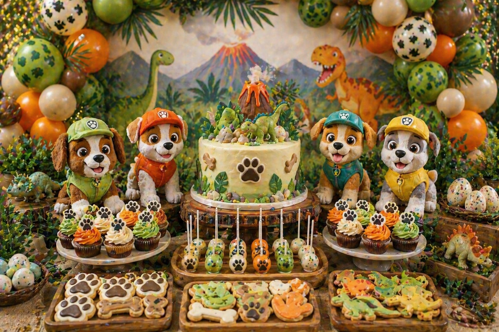
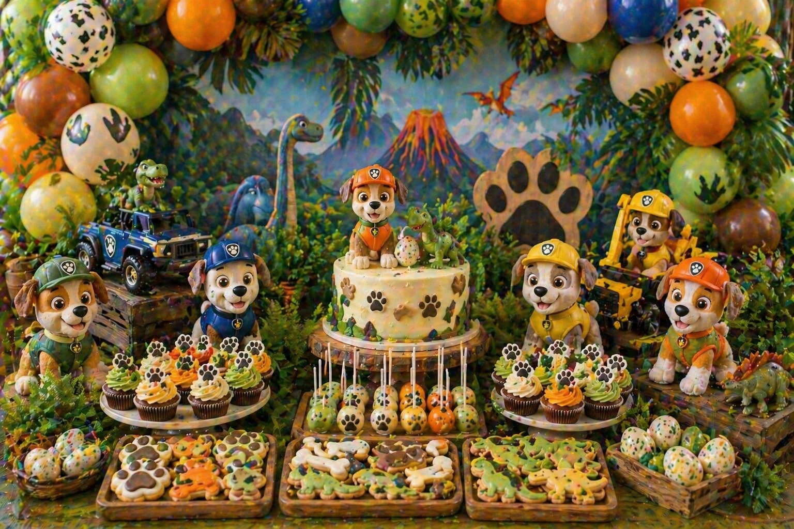

A rescue pup dinosaur party is a fun, action-filled theme for children who love puppies, dinosaurs and adventure-style celebrations. It combines the playful feel of a puppy party with the excitement of a dinosaur jungle setup, bringing together paw prints, dinosaur eggs, volcano details, puppy cupcakes and green, orange and beige balloon styling in one vibrant display.
At Little Moment Studio, our focus is balloon styling and celebration setups. We do not make cakes or cupcakes ourselves, but we know how important the dessert table is to the overall party look. This guide covers rescue pup dinosaur party inspiration — colour palettes, balloon ideas, styling approaches and sweet treat ideas that work beautifully together.
If you would like cupcakes or a cake to complement your balloon display, we are happy to recommend a trusted local cake maker.
Why Rescue Pup Dinosaur Parties Work So Well
This theme works because it combines two things children often love: puppies and dinosaurs. It feels playful, colourful and energetic, while still being flexible enough to style in different ways. A rescue pup dinosaur table can lean earthy and jungly, bold and adventurous, or soft and neutral for younger children.
| Element | Rescue Pup Dinosaur Inspiration |
|---|---|
| Balloon garland | Green, orange and beige with brown accents and paw-print balloons |
| Cake | Puppy and dinosaur cake, volcano cake or jungle adventure cake |
| Cupcakes | Paw-print cupcakes, dinosaur nest cupcakes or green and orange swirls |
| Cookies | Paw prints, dog bones, dinosaur footprints and egg shapes |
| Cake pops | Speckled dinosaur eggs, paw pops and lava-style pops |
| Backdrop | Jungle leaves, volcano scene, dinosaur landscape or paw-print panel |
| Props | Friendly puppy figures, toy dinosaurs, wooden crates and jungle leaves |
| Table styling | Rustic stands, greenery, orange accents and adventure details |
The key is to keep the setup fun, colourful and full of small adventure details. When puppy and dinosaur elements share the same colour palette, the two themes read as one cohesive world rather than two separate parties pushed together.
Rescue Pup Dinosaur Party Colour Palettes
Start with the colour palette before choosing the balloons, cake or sweet treats. For the most premium result, use green, orange, beige and brown as the main base, then add only small pops of red, blue or yellow if you want a brighter, more rescue-adventure feel.
Jungle Rescue Pup
Forest green, orange, beige and brown. Earthy, adventurous and versatile.
Bright Adventure
Green, orange, red and blue. Bold, colourful and full of energy.
Volcano Rescue
Orange, brown, dark and forest green. Dramatic and adventure-ready.
Soft Dinosaur Pup
Sage, cream, beige and warm tan. Gentle and perfect for first birthdays.
Idea 1: Puppy & Dinosaur Jungle Dessert Table
A puppy and dinosaur jungle dessert table is the strongest version of this theme. It brings together leafy greenery, dinosaur props, paw prints, speckled eggs and friendly puppy details in a single adventurous setup. This is the version that reads most clearly as rescue pup dinosaur from across the room, because the mix of puppy and dinosaur elements is impossible to miss.
| Element | Jungle Table Idea |
|---|---|
| Balloon garland | Forest green, sage and beige with orange accents and paw-print balloons |
| Backdrop | Jungle leaves panel, volcano scene or green leaf balloon backdrop |
| Cake | Puppy and dinosaur cake with volcano or jungle topper |
| Cupcakes | Paw-print cupcakes and dinosaur nest cupcakes mixed across the stand |
| Cookies | Dog bones, paw prints, dinosaur footprints and speckled egg cookies |
| Cake pops | Speckled dinosaur egg cake pops displayed in small wooden crates |
| Props | Toy dinosaurs, friendly puppy figures, jungle leaves and wooden stands |
| Sweet jars | Green and orange sweets in rustic jars on either side of the cake |
This is the best main direction for a rescue pup dinosaur party because both sides of the theme are visually present from the first glance. The puppy details — paw prints, friendly puppy figures, dog bones — keep the table warm and approachable, while the dinosaur and jungle elements add the sense of adventure that makes the theme exciting.
Balloon tip
For a jungle rescue pup garland, use forest green and sage latex balloons as the main base with beige and brown balloons for warmth. Add paw-print balloons as occasional accents — one every six to eight balloons — and finish with a cluster of orange balloons near the centre for a focal point. Avoid mixing too many different patterned balloons in one garland: paw-print accents work best when the majority of the balloons are solid colour.
Idea 2: Puppy & Dinosaur Cake Display

Puppy and dinosaur cake display styled by Little Moment Studio, Sittingbourne — volcano cake, paw-print cupcakes, dino egg cake pops and jungle styling
A close-up cake and cupcake display gives parents and cake makers a clear idea of how the dessert details can work together. The birthday cake becomes the unmistakable centrepiece — puppy and dinosaur details on the same cake, or a volcano cake surrounded by puppy figures and dinosaur egg cake pops, instantly communicates the theme without needing every element to carry both motifs.
| Element | Cake Display Idea |
|---|---|
| Cake | Puppy and dinosaur birthday cake or volcano cake with puppy topper |
| Cupcakes | Paw-print cupcakes and dinosaur nest cupcakes on a tiered stand |
| Cookies | Dog bone and paw-print cookies framing the base of the stand |
| Cake pops | Speckled dinosaur egg pops and paw pops grouped in a small stand |
| Cake stand | Natural wood or cream stand with green and orange details |
| Balloon garland | Green, orange and beige garland with paw-print accents above the table |
| Props | Friendly puppy figures and toy dinosaurs on either side of the cake |
Mixing paw-print cupcakes and dinosaur nest cupcakes across the same stand is one of the simplest ways to make both sides of the theme visible at once. Dinosaur nest cupcakes use the Wilton 233 grass tip to create a nest texture, then small sugar or fondant eggs are added on top — they take slightly more time than paw-print cupcakes but make a big visual impact on the display.
For more cupcake inspiration, see our birthday cupcake ideas guide and dinosaur party cupcake ideas.
Idea 3: Dinosaur Egg & Puppy Treat Table

Puppy and dinosaur treat table — dino egg cake pops, paw-print cookies, jungle cupcakes and adventure styling in green, orange and beige
A treat-focused version of the theme gives more space to the sweet details and lets the individual treats tell the story. Speckled dinosaur egg cake pops, paw-print cookies, dog bone cookies and dinosaur footprint cookies can be arranged at different heights across the table using wooden crates and rustic stands, creating a layered display that draws guests in to look more closely.
| Element | Treat Table Idea |
|---|---|
| Cake pops | Speckled dinosaur egg cake pops in cream, sage and brown |
| Cookies | Paw prints, dog bones, dinosaur footprints and egg-shaped cookies |
| Cupcakes | Green jungle swirls and orange swirl cupcakes as filler |
| Sweet jars | Green and orange sweets, chocolate eggs and bone-shaped treats |
| Props | Toy dinosaurs, plush puppies and small bowls of sweets |
| Stands | Wooden crates and rustic trays at different heights |
| Balloon garland | Neutral sage, cream and beige garland with soft orange accents |
Styling tip
Speckled dinosaur egg cake pops are one of the most effective ways to add a dinosaur detail without a cake topper. To achieve the speckled effect, dip the cake pop in a pale cream or sage coating, then use a stiff brush dipped in brown cocoa paint to flick small spots across the surface while the coating is still slightly soft. Display them upright in a small stand or grouped in a wooden crate for a natural, earthy presentation.
Idea 4: Volcano Rescue Pup Table
A volcano rescue pup table gives the theme more drama and adventure. The volcano cake becomes the centrepiece, surrounded by lava-style cupcakes with orange and red buttercream, paw-print cookies, dinosaur footprint cookies, chocolate rock treats and friendly puppy props. Orange and brown balloons with green jungle accents and a dark backdrop create a bold, high-energy look that older children tend to love.
This version works best when the volcano detail is confined to the cake and cupcakes rather than spread across the whole table. A few toy dinosaurs and puppy figures around the base of the stand are enough to communicate the rescue pup element — the volcano itself does the heavy lifting visually.
Idea 5: Soft Neutral Puppy Dinosaur Table
A softer version of the theme works beautifully for younger children and first birthdays. Sage, cream, beige and muted orange replace the bold bright palette, keeping the table calm, photo-friendly and premium in feel. A neutral puppy and dinosaur cake with a number one topper, paw-print cupcakes in soft greens, speckled cream dinosaur egg cake pops and a sage and cream balloon garland with gentle leaf details creates a setup that feels considered and gentle without losing the jungle adventure character.
This is the best version if you want the theme to feel quieter and more refined — particularly useful when the venue is already colourful or when you are photographing the table professionally.
What to Include on a Rescue Pup Dinosaur Dessert Table
A rescue pup dinosaur dessert table can be simple or full depending on the size of the party. Start with the cake and cupcakes, then add cookies, cake pops and sweet jars to build out the display. Props fill the visual space without adding more food than guests can eat.
| Treat | Rescue Pup Dinosaur Idea |
|---|---|
| Birthday cake | Puppy and dinosaur cake, volcano cake or jungle adventure cake |
| Cupcakes | Paw-print cupcakes, dinosaur nest cupcakes or green and orange swirls |
| Cookies | Paw prints, dog bones, dinosaur footprints and speckled egg shapes |
| Cake pops | Speckled dinosaur egg pops, paw pops or lava-style orange pops |
| Macarons | Green, orange, beige or chocolate brown tones |
| Sweet jars | Green sweets, orange sweets, chocolate eggs or bone-shaped sweets |
| Brownies | Rocky volcano-style pieces or chocolate rock treats |
| Mini desserts | Small pots with dinosaur egg or paw-print toppers |
For practical advice on arranging the table layout, see our guide to how to style a dessert table for a children's party. For advice on coordinating the sweet treats with your balloon display, see our guide on how to match cupcakes with your balloon display.
Rescue Pup Dinosaur Cupcake Ideas
Cupcakes are ideal for this party theme because you can mix puppy and dinosaur details across the same display. Alternating paw-print cupcakes and dinosaur nest cupcakes across a tiered stand means both sides of the theme are always visible, regardless of which angle guests approach from.
| Cupcake Style | Best For |
|---|---|
| Paw-print cupcakes | The puppy side — clear, simple and child-friendly |
| Dinosaur nest cupcakes | Dinosaur egg detail with grass tip texture and fondant eggs |
| Volcano lava cupcakes | Orange and red buttercream for adventure and volcano styling |
| Dog bone cupcakes | Simple puppy detail using a fondant or sugar bone topper |
| Green jungle cupcakes | Easy filler cupcakes that tie into the jungle palette |
| Orange swirl cupcakes | Volcano or adventure accent — straightforward to pipe |
| Dinosaur footprint cupcakes | Small fondant footprint pressed into a smooth buttercream top |
| Puppy face cupcakes | Fondant ears and nose on a smooth base for a cute children's look |
Useful piping tips for this theme:
| Effect | Tip |
|---|---|
| Tall swirl | Wilton 1M open star |
| Rosette swirl | Wilton 2D closed star |
| Grass / nest / fur texture | Wilton 233 grass tip |
| Smooth puppy faces | Wilton 1A large round |
| Leaves or greenery | Wilton 352 leaf tip |
| Small dots and details | Wilton 3, 4 or 12 round tip |
For a fuller guide to piping tips, see our best piping tips for cupcakes guide.
Balloon Ideas for a Rescue Pup Dinosaur Party
The balloon display creates most of the visual impact around the dessert table. For a rescue pup dinosaur party, the palette sets the tone for the whole adventure feel — earthy jungle greens and warm oranges read as adventure, while sage and cream shift the mood to something softer and more neutral.
| Theme | Balloon Colours |
|---|---|
| Jungle rescue pup | Forest green, sage, beige and brown with paw-print accents |
| Bright adventure | Green, orange, red, blue and yellow — bold and energetic |
| Volcano rescue | Orange, brown, dark and forest green with orange focal cluster |
| Soft neutral | Sage, cream, beige and ivory with muted orange accents |
| Dino egg table | Sage, cream, speckled beige and chocolate brown |
| First birthday | Sage, cream and ivory with a number balloon accent |
For balloon packages and availability in Sittingbourne and Kent, see our birthday balloon styling page and balloon garlands page.
Matching Balloons, Cake & Cupcakes
The desserts do not need to match the balloons exactly. They just need to feel like part of the same colour story. Pick three to five colours and use them across every element — the balloons, cake, cupcakes, cookies and props — for a cohesive result.
| Balloon Palette | Cake & Cupcake Idea |
|---|---|
| Green, orange, beige | Jungle adventure cake, paw-print cupcakes, dinosaur egg cake pops |
| Sage, cream, brown | Neutral puppy dinosaur cake, soft green cupcakes, paw cookies |
| Orange, brown, dark | Volcano cake, lava cupcakes, dinosaur footprint cookies |
| Green, beige, cream | Paw-print cake, dinosaur nest cupcakes, bone cookies |
| Red, blue, yellow accents | Bright adventure cake and colour-matched mixed cupcakes |
For more advice on coordinating your colour palette across the whole table, see our guide to how to choose a colour palette for your balloon display.
Your Questions Answered
What colours work best for a rescue pup dinosaur party?
Green, orange, beige and brown are the strongest base palette for a rescue pup dinosaur party. They create a jungle, earthy, adventure feel that works for both sides of the theme. Forest green and sage form the jungle backbone, orange adds warmth and adventure energy, and beige or brown keeps the palette grounded. Small pops of red, blue or yellow can be added for a brighter rescue-adventure version. For a first birthday or softer look, sage, cream and beige with muted orange feels calm and photo-friendly.
What balloons should I use for a rescue pup dinosaur party?
A forest green, sage and beige garland with orange accents and paw-print balloon details is the most versatile rescue pup dinosaur balloon combination. The green and beige balloons create the jungle feel, orange adds a focal point and adventure energy, and paw-print accent balloons add the puppy identity without the need for novelty-shaped balloons. For a volcano rescue version, orange, brown and forest green work well. For a softer first birthday, sage, cream and ivory balloons with a number balloon accent feel premium and gentle.
What cupcakes work well for a rescue pup dinosaur theme?
Paw-print cupcakes and dinosaur nest cupcakes are the most effective combination because they represent both sides of the theme at once. Dinosaur nest cupcakes use the Wilton 233 grass tip for a nest texture with small fondant or sugar eggs on top. Paw-print cupcakes are simple to pipe using a small round tip. Green jungle cupcakes and orange swirl cupcakes work as easy filler cupcakes that stay within the colour palette. See our dinosaur party cupcake ideas guide for more detail.
What should I include on a rescue pup dinosaur dessert table?
A strong rescue pup dinosaur table includes a puppy and dinosaur birthday cake as the centrepiece, twelve to twenty-four mixed cupcakes, paw-print and dog bone cookies, dinosaur footprint and egg cookies, speckled dinosaur egg cake pops, sweet jars and a mix of toy dinosaurs and friendly puppy props. A green, orange and beige balloon garland framing the backdrop creates most of the visual impact. Jungle leaves, wooden crates and rustic stands reinforce the adventure theme.
Can a rescue pup dinosaur party work for a first birthday?
Yes — a soft version of this theme works beautifully for a first birthday. Shift to sage, cream and beige with muted orange instead of bright colours, and use a neutral puppy and dinosaur cake with a number one topper. Paw-print cupcakes in soft greens, speckled cream dinosaur egg cake pops and a sage balloon garland with gentle leaf details creates a setup that feels premium and calm. See our first birthday balloon ideas guide for more inspiration.
Whether you choose the full jungle adventure version with bold greens and orange, a volcano rescue table with dramatic cake centrepiece, or a softer neutral setup for a first birthday, the key to a great rescue pup dinosaur table is using the same colour story across every element. When the balloons, cake, cupcakes, cookies and props all share the same palette, the puppy and dinosaur details become part of one cohesive world.
For more children's party inspiration, see our guides to puppy party balloon and dessert table ideas, dinosaur party balloon and dessert table ideas and farm party balloon and dessert table ideas.
Planning a Rescue Pup Dinosaur Party in Sittingbourne or Kent?
Little Moment Studio creates beautiful balloon displays and celebration setups for children's birthdays across Sittingbourne and Kent. We can also recommend a trusted local cake maker to complete your rescue pup dinosaur dessert table.